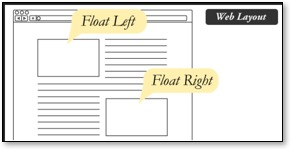
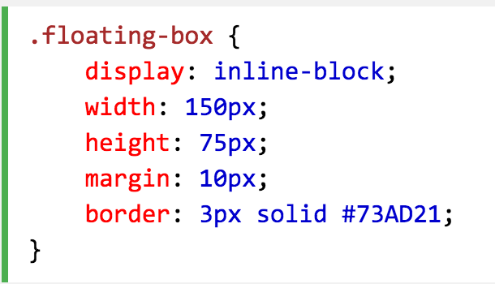
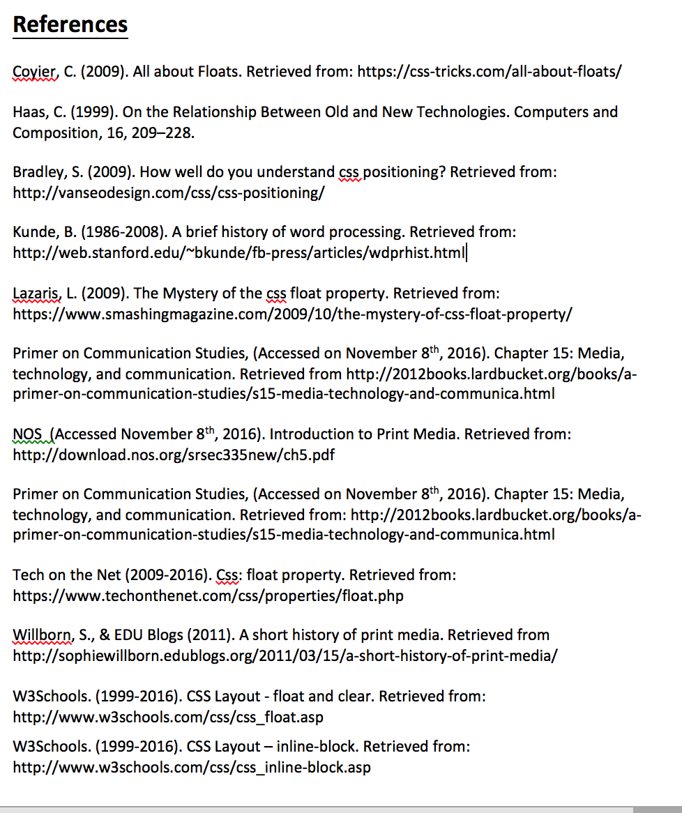

Project Introduction
We have information, accessible at the tips of our fingertips. Google now allows us to search for anything we may be wondering. We can find out last night’s news, or even look up what that weird mole might be on our left toe. Our ability to sift through information being presented to us is so amazing, that we aren’t actually considering how it is being presented to us.
Design is changing with technology. We now have computers, tablets, phones, and watches, that all allow us to access information at our fingertips. Users are not only accessing information in a variety of ways, but the information being presented to them, is formatted to fit the platform in which it is being presented. Responsive Web Designs allows users to see the same content and information, formatted to the device they are using.
With so much information being accessible, it is critical to communicate as concisely as possible. Visual rhetoric may be more useful now, than ever. We want fewer words, more pictures, and as little information as possible. We just want to find what we are looking for.
Stop.
Consider what we are looking at, and consider what we are actually seeing.
What is it that is really being displayed? No, no. Beyond the information.
With so much information out there, on a variety of platforms, and displays, I was interested in one question.
How are we actually formatting our webpages with text and images, that seamlessly flow together?
What is the code that allows the text and images to not only fit the platform it is presented on, but coexist together?
Throughout this course, HTML and CSS has been a benchmark for learning about web design and the code that makes it work. [Float:] is a CSS property that allows us to left or right align text, images, and similar block elements.  [Float:] can act alone, without another property specified, and it is related to text wrapping. The two ideas are similar because, [Float:] allows content to move and wrap around the other elements, or photos. This can help create a more table-like design, and maintain organization and structure of images and text. But, where did [Float:] come from? What came before it, and how are we using it today?
Christina Haas’s (1999) “Old and New Technologies,” offers a methodology that highlights ways to investigate that relationship. Her article is based on Vygotsky’s historical-genetic method. A Vygotskian approach allows us to see:
“…(a) that multiple technologies for literacy exist, (b) that their history-of-use is complex and overlapping, and (c) that technology’s uses are tied intrinsically to other human activities.”
My plan is to use this approach to investigate the history of [Float:]. I plan to connect [Float:] with other related technologies, both past and present, and how the overlapping history and connections with social context lead to the creation of [Float:}.
Examining Print Media Origins
“… technological change cannot be a simple replacement of one technology with another—nor even an historical rupture between technologies— because technology is anchored so closely both to individual histories and to cultural practices (1999).”
1935 introduced the affordable typewriter, and once again changed how we looked at typeface, and design. The type writer allowed users to create their own print, at a more personal and private level. Limitations came with the typewriter, including the formatting, text wrapping, color choices, and typeface selections. This development allowed people to play with formatting, in a limited capacity. Making changes, deletions, and altercations required creating a new document, or page, which was one of the typewriter’s shortcomings. However, this idea continued to evolve and develop how we thought about print and type until 1960, when digital design came about (“Short History of Print: A blog post” Willborn, S., 2011). With Digital design, a positive and negative impact came. Some would argue print media and printing disappeared when the computer came out, those in the field lost their jobs to computers and electronic design (“Short History of Print: A blog post” Willborn, S., 2011) However, what computers did was revolutionized print making it more accessible, easier to replicate information and design, better ways to create designs, and more efficient way to perfect layouts and text alignment.
The rhetorical implementations of alignment for print developed with technology advancements. [Float:] developed from print media. Newspaper printing stemming from the Industrial Revolution was the earliest start of print media and stylistic design. Journalism spurred paper publishing and font type develop, as early as 1880 (“Short History of Print: A blog post” Willborn, S., 2011) It is suggested that the Art Nouveau movement of 1890 would be marked as one of the most influential time when style design and layout organization really developed (“Short History of Print: A blog post” Willborn, S., 2011). Haas says,
“Yet, decisions about technology, whether in development or in use, are not boundless: they are constrained by the historical, material, and cultural circumstances surrounding them” (Haas, 1999).
Ideas of Text Design first started with those early newspaper times, where we replicated, shared, and copied text. Sharing text, and social context lead us to design advancements, like [Float:], because technology grew to help us think about how we were displaying that information. Thinking about how we formatted information, grew beyond the need for print communication; instead, we were lead to the development of design, through technology. These circumstances allowed us to personally adjust and create our own print/text. The implications of printing information started with newspapers and magazines, specifically for communication and replication purposes. Then, typewriters allowed us to do that information more easily, and create personal replications and forms of word processing. Now, computers allow us to encompass all of this, and format text as well as create it.
What is important to note, is newspapers and magazines used formatting and alignment at a macro level, while computers and typewriters allowed users to use alignment at a more personal level. Christina Haas’s idea of “Power as a Relational Concept in Technological Development and Use” can be connected here. To reference her article,
“At a macro level, technologies and artifacts help to fix or reify certain structures, and can therefore be instruments of power; this is…called the semiotic aspect of power. But, at a micropolitical level…a variety of everyday practices can shape or structure the actions of others.”
Some would argue that the computer ultimately allowed the individual user an easier way to align text and images, that a typewriter did not. With the computer, the creation of word processing and coding arose to meet the limitations of the typewriter. Computers have now continued to develop our thinking on textual processing, and are used for everyday practices of word processing. Thus, brining print and design into our own homes.
Computers allowed users to do more. Users could add more font choices, find easier ways to align text and images, and accomplish all of this with limited backtracking. This presentation and creation of text would coexist with the technology we had for design already, in newspapers. “The various communication technologies not only coexist, but also reinforce one another.” (Haas, 1999). This is still true of today. [Float:], arose from new technology, that coexists with the communication technologies we still have, and ultimately, reinforce the use of one another. Thus, [float:] may be used in computers, and is a newer way to use text and image alignments, but still coexists with the formatting seen in newspapers today.
Using Float

You can use [Float:] to wrap an entire layout, an image, text, or a block of text.

Issues with formatting layouts using [Float:] may require a variation of this property, and is called [clear:]. This variation of float can be used to work with different browsers, and also multiple layered design layouts. We will discuss [clear:] more in depth in the “Developments” section of this site.
Where Float falls short
Once an element is floated, [clear:] can be used to choose how the elements floating around the designated [float:] element, act.
[Clear:] is an alteration of [float:], used to specifically control the actions of the floated elements.
Once an element is floated, [clear:] can be used to choose how the elements floating around the designated [float:] element, act. Without this property, elements surrounding the floating element, will just float with no alignment. This can be useful if you want to justify text under an image that is currently [float:] center. You can then [clear:] left the text floating around the image.

Problems with [clear:] is sometimes the floated elements surround the [float:] element, are larger. Thus, they “overflow” their containing specification. Instead you can use another alteration known as: [overflow:].
[overflow: auto]. This will correct the overflowing content, and again, [float;] the surrounding elements as directed.

Responsive web-design is a newer technology, that has been created, as our society’s has developed a variety of devices to use (tablets, iPads, watches, iPods, etc.). Thus, changes in browser size, and changes in device size/view can create a problem with [float:]. While responsive web-design is another investigation, it has led to developments where float is limited.
[inline-block] values have developed from [float:] to create a better fit-to-size browser adjustment.
You can use inline-block values to adjust width, height, margins, and border displays, so everything wraps correspondingly to browser size. This eliminates the need for [clear:] after values have been specified for the display.
While [float:] is used to align and justify, it does present limitations. It is important to note these limitations are based on other societal changes, like responsive web-design changes. It also has general limitations of the property itself, but can add more control, like [clear:] for maintaining control of the other elements that [float:] does not specify.
Summarizing
“Understanding twentieth-century literacy means understanding the multiple technologies that support it, have supported it, and continue to support it. Further, we can take the long view and look for similarities as well as differences across time, even though similarities are sometimes more difficult to see… (Haas, 1999).
Haas (1999) said it best in her article. To understand a current technology, one must reflect back on previous systems and technologies before it, which have built up the technology we know today. Like [Float:], text wrapping, and design layouts have been a thing of the past, and will continue to be a thing of the future. As our society continues to expand, I can only assume that code will continue to develop and fix any shortcomings that came before it.
Print Media, and our societal needs for individual replications led us to type writers, but newspapers will be one the earliest ways we as a society attempted to organize text and images, in a presentable way, for readers.
[Float:] was one way that we as a society adjusted to print media, and our adaption to computers. This was one way to fix print design and organization that they typewriter couldn’t do, but also, allow us to have some control as we may have done with setting a magazine template or layout.
While [Float:] is a very useful CSS property, it did introduce other properties where it felt short. Overflow: auto, will continue to help provide direction to [Float:]s limitations, and will eventually adapt as well with responsive web-design.
From readers, to users, our ability to format text and create print design has adapted. We have created fixes for shortcomings, and will continue to adapt as our societal needs change. With responsive web-design, and our need to find concise information, I will be intrigued to see how code and design becomes more image based rather than informational based. Will we rely more on image display and design, rather than text alignment? Will visual rhetoric become more important than ever? Our ability as a society to reflect on the past, make connections, and adapt to changes for the future, leaves us in a good place. This will only leave endless possibilities for further advancements in technology, and properties, such as [Float:].
